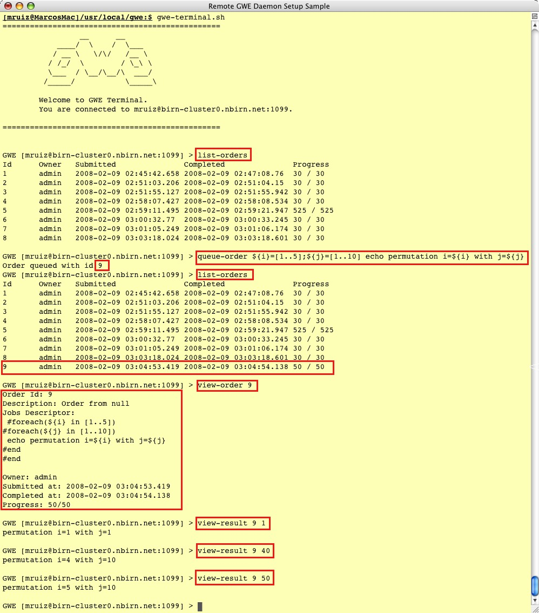

To ease readability the following command has been broken down in several lines. If you wish to resubmit it, you will have to put it back together in a single line
queue-order ${ITER}=[10..50||10] ${HIST}=[20..100||020] ${SAM}=[500..5000||0750]
/home/gwe/Slicer3/Slicer3 --launch /home/gwe/Slicer3/lib/Slicer3/Plugins/BSplineDeformableRegistration
--iterations ${ITER} --gridSize 5 --histogrambins ${HIST} --spatialsamples ${SAM} --maximumDeformation 1
--default 0 --resampledmovingfilename /export2/gwe/slicer-test/out-${ITER}-${HIST}-${SAM}.nrrd
in[fixed.nrrd]:http://www.na-mic.org/ViewVC/index.cgi/trunk/Libs/MRML/Testing/TestData/fixed.nrrd?view=co
in[moving.nrrd]:http://www.na-mic.org/ViewVC/index.cgi/trunk/Libs/MRML/Testing/TestData/moving.nrrd?view=co
${ITER}=[10..50||10] ${HIST}=[20..100||020] ${SAM}=[500..5000||0500]
in[fixed.nrrd]:http://www.na-mic.org/ViewVC/index.cgi/trunk/Libs/MRML/Testing/TestData/fixed.nrrd?view=co in[moving.nrrd]:http://www.na-mic.org/ViewVC/index.cgi/trunk/Libs/MRML/Testing/TestData/moving.nrrd?view=co
The following is a snapshot of a GWE terminal session against GWE Enabled BIRN's cluster
